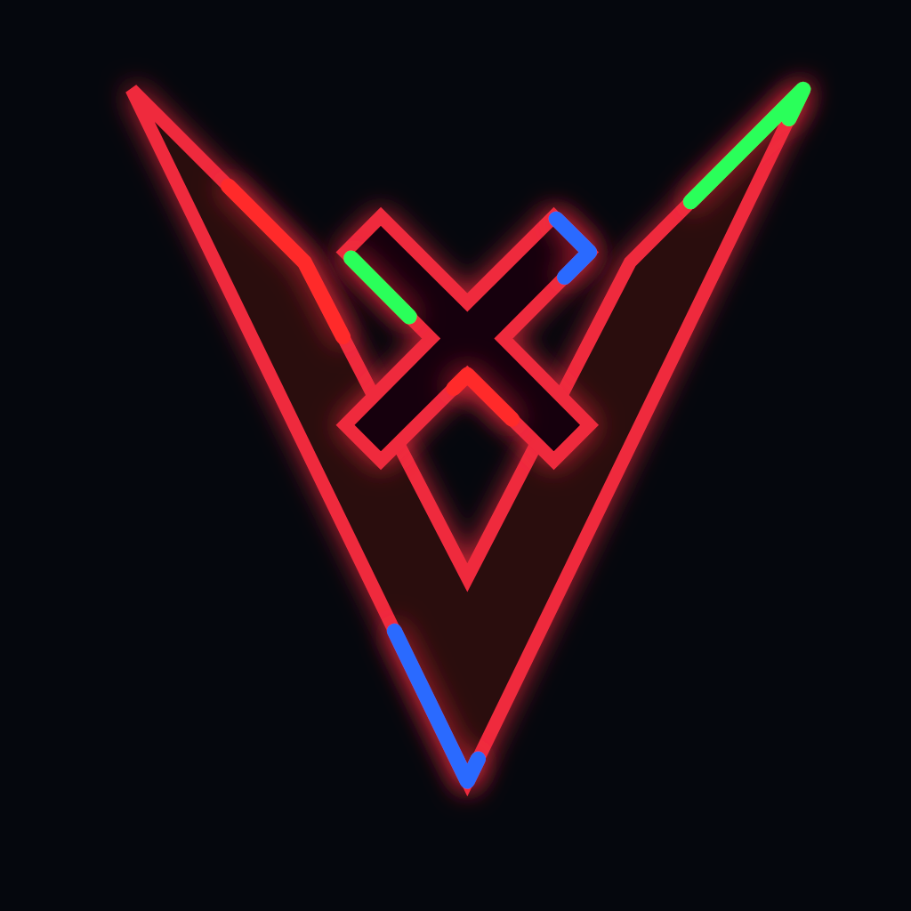

Um espaço seguro para desenvolver.
O Vynx OS cria laboratórios Linux isolados e descartáveis no seu computador, liga um celular Android virtual para testar seus apps e mostra seus projetos do GitHub. Errou? Descarte o laboratório e comece de novo, sem sujar o Windows.
Instalador comum (VynxSetup.exe). Precisa do Windows 10 ou 11 com o WSL2 ligado; o app ajuda a conferir isso na primeira abertura. Não existe versão para celular nem para navegador.

O que o Vynx OS faz
Laboratório descartável
Um Linux isolado em cima do WSL2, sem acesso aos seus arquivos do Windows. Terminou o teste, é só descartar.
Emulador de Android
Teste os apps da suíte em um celular virtual, sem instalar APK no seu telefone a cada mudança.
Painel Dev do GitHub
Veja seus repositórios, versões e builds. O token fica só no seu computador.
Atualiza sozinho
O app avisa quando há versão nova e instala com um clique.
Baixe grátis
Só para Windows, por enquanto.
Se o aviso do SmartScreen aparecer, clique em “Mais informações” e depois em “Executar assim mesmo”.
Perguntas frequentes
Posso mexer nos meus arquivos do Windows pelo laboratório?
Não, de propósito: o laboratório é isolado, sem acesso às suas pastas, e o app só mexe nos laboratórios que ele mesmo criou.
O emulador de Android funciona em qualquer computador?
Só com a virtualização ligada na BIOS (WHPX ou Hyper-V). Sem isso, o laboratório funciona, mas o celular virtual não liga.
É grátis?
É, enquanto estiver em fase de testes.